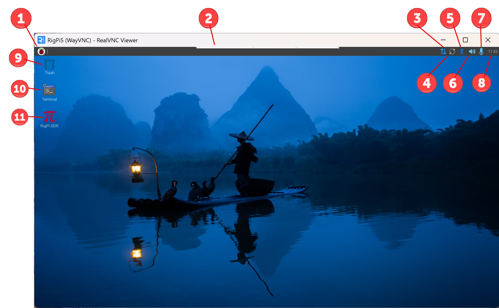

|
<< Click to Display Table of Contents >> Navigation: RigPi Introduction > |

Raspberry Pi 5 Desktop (VNC)
The Raspberry Pi Desktop is similar to many graphics desktops. The Raspberry Menu button on the left end of the Launch Bar is similar to a Windows File menu. Most buttons and icons have a right-mouse menu for additional options. You can access the Desktop by connecting an HDMI monitor to RSS, or by using VNC Viewer to access it from another computer.
The position of the Task Bar can be set to top, bottom, or a. To change the position (shown at the top, above), right-click over the Task Bar and select Panel Settings. In the Panel Preferences window, select the Edge Position you prefer.
|
Function |
Description |
1 |
Raspberry |
Applications Menu |
2 |
Hidden Toolbar |
Access to VNC toolbar |
3 |
Network |
Network settings |
4 |
Connect |
Raspberry Pi Connect |
5 |
Bluetooth |
Manage Bluetooth Devices |
8 |
Wi-Fi/Ethernet |
Internet Connection |
6 |
Speaker |
Audio status and output selections |
7 |
Microphone |
Audio In status and input selections |
8 |
Clock |
Digital clock showing local time |
9 |
Trash |
Drag unwanted items to trash |
10 |
Terminal |
Open Terminal window |
11 |
RigPi |
Start RigPi in RigPi Desktop Chromium browser. It is best to connect to RigPi using an external browser, not the Raspberry Pi browser. By using an external browser the limited resources of the Raspberry Pi can be helped by sharing the load with another computer. |
Setting up the Raspberry Pi
When you first start RSS you must make changes to the Raspberry Pi to adjust to your needs and location. These settings are done through the Applications Menu (1)>Preferences>Control Centre menu item.
The Control Centre window has multiple options in the left column:
▪Defaults,
▪Desktop
▪Display
▪Interfaces
▪Keyboard
▪Localization
▪Main Menu
▪Mouse
▪Performance
▪Printers
▪Screens
▪System
▪Taskbar
▪Theme
Screen Resolution: Go to Screens > Screens > HDMI-A-1 and select Active. Go to Screens > HDMI-A-1 and select Resolution, then the resolution appropriate for your monitor. Note this also controls the screen resolution when the Desktop is viewed through the VNC interface.
Locale: Go to Localisation > Locale and select Language, Country and Character Set.
Timezone: Go to Localisation > Timezone to set you station timezone.
Keyboard: Do the same to select you keyboard layout.
WiFi Country: Repeat for your WiFi country.
Default Screen Size: Change the font/icon size relative to the screen using the Appearance Settings in the Preferences menu. Defaults are provided for large, medium and small screens.
WiFi Source: To enable Wi-Fi, click the up/down arrow button (8) on the right side of the Desktop launch bar. Left-click, then click Available Networks to select your network, then click Enable Wi-Fi.